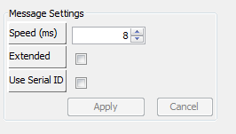

Message Speed: This is the speed (frequency) interval at which the message is either received or transmitted. It is in increments of 8ms.
Extended (CANBUS ID Mode): There are two different ID modes for a typical CANBUS interface. Extended mode allows for CANBUS message identifiers (IDs) of up to 29 bits in length (eg: 0x1 to 0x1FFFFF) whereas the standard mode allows up identifiers up to 11 bits in length (eg: 0x1 to 0x7FF). If this value is checked, then the message is flagged as Extended.
Use Serial ID: If this is selected, the BMS will substitute the BMS serial number (in hexadecimal form) for the provided CAN ID. This allows for unique messages to be broadcast from each BMS connected on a CANBUS without having to individually program each unit with a unique profile.
| < Editing CANBUS Messages | Field Specific Options > |